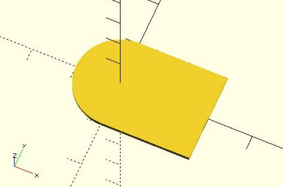
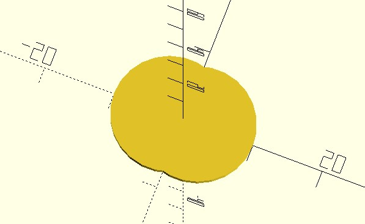
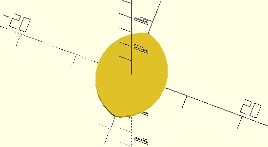
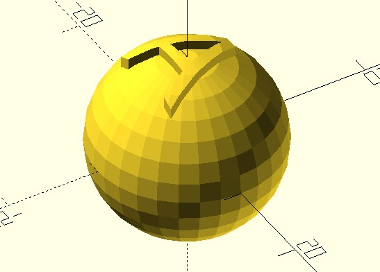
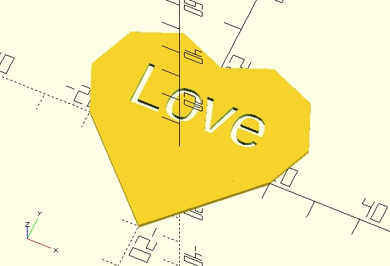

圖形布林運算
February 25, 2022在〈OpenSCAD CheatSheet〉可以看到，OpenSCAD 在 2D 與 3D 提供的模組不多，只是 circle、square、sphere、cube 等基本模組，然而，複雜模型可以從這些基本模型，基於 union、difference、intersection 組合而來。
這就是 OpenSCAD 採用的主要建模方式 CSG（Constructive Solid Geometry），也就是一個實體模型，可以表示為立方體、圓柱體、球點等基本物體布林操作後的結果。
相對地，CadQuery 以 OpenCascade 作為核心，而 OpenCascade 採用 BREP（Boundary Representation）來表示實體模型，也就是以點、線、面等作為基礎，其相互間的關係來描述模型。
union 聯集
在模型的布林運算中，union 是最使用的，也就是取模型的聯集，其實你早就在使用了，隨便舉個例子好了：
radius = 10;
$fn = 48;
circle(radius);
translate([0, -radius, 0])
square(radius * 2);
程式碼中建立了一個圓與一個方塊，在 OpenSCAD 裡，圓其實是個正多邊形，這邊使用 OpenSCAD 的特殊變數 $fn 指定這個圓有 48 個邊。
特殊變數是以 $ 開頭的變數，在特定範疇裡定義的特殊變數，該範疇或子範疇內執行的程式碼或呼叫的函式、模組，都可以取得該變數，例如，circle 內部會參考 $fn 來決定邊數，而 $fn 是在全域範疇設定，circle 執行時就可以取得 48 這個值。
特殊變數所以為特殊變數，是因為它並不是函式或模組的參數之一，然而在呼叫函式或模組時，可以在引數列上指定特殊變數，例如，circle(radius, $fn = 48)，這麼一來，$fn = 48 就只會套用在該次執行 circle。
以上範例接著建立一個方塊，邊長為圓直徑，並在 Y 軸負方向位移一個半徑長，結果就是…

如果沒有特別指定，模型最後渲染（render）時也會自動聯集，你也可以使用 union 明確指定：
radius = 10;
union() {
circle(radius, $fn = 48);
translate([0, -radius, 0])
square(radius * 2);
}
為了預覽時能更為快速，預覽階段 union 實際上不會執行（因為視覺效果相同），OpenSCAD 稱此為 lazy union。
雖然若沒有特別指定，模型最後渲染時也會自動聯集，然而若模型必須聯集為單一模型，而後進一步布林操作，就得明確使用 union，例如：
intersection() {
circle(12);
union() {
translate([-2, 0, 0])
circle(8);
translate([2, 0, 0])
circle(8);
}
}
這會顯示以下的圖形：

然而，拿掉 union() 的話，會變成 circle(12) 與 translate([-2, 0, 0]) circle(8) 先進行交集，結果再與 translate([2, 0, 0]) circle(8) 進行交集，呈現的圖形就不同了：

平常我不會特別撰寫 union，只有在類似以上的情境才會使用，這是因為 translate、rotate 等轉換操作，也會將指定區塊中的模型 union，若在上例將 union() 換為 translate([0, 0]) 或 rotate(0)，呈現的圖形會相同。
同一個 module 的繪製成果，也會進行 union，例如以下與方才使用 union 的版本，呈現的圖形是相同的：
module foo() {
translate([-2, 0, 0])
circle(8);
translate([2, 0, 0])
circle(8);
}
intersection() {
circle(12);
foo();
}
intersection 交集
intersection 是做模型的交集，也就是兩個模型間彼此有重疊的部份，才會保留下來，方才已經看過基本的 intersection 使用方式了。
來看看另一個實際的例子，如何做一個球面字呢？可以使用 text 建立文字後以 linear_extrude 擠出，再與球交集，補上個小球做聯集：
character = "A";
font_size = 10;
thickness = 1;
sphere(font_size);
intersection() {
sphere(font_size + thickness);
linear_extrude(font_size * 2)
text(character,
size = font_size, // 文字大小
valign = "center", // 垂直置中
halign = "center" // 水平置中
);
}
這樣就可以建立以下的 3D 模型了：

difference 減集
difference 就是對模型做差集，也就是對模型做減法運算，舉個例子來說，你也許會想在愛心上刻個鏤空字：
radius = 20;
t = "Love";
module heart(radius) {
half_r = radius / 2;
little_c_r = half_r * sqrt(2);
circle(radius, $fn = 4);
translate([half_r, half_r])
rotate(45)
circle(little_c_r);
translate([-radius / 2, radius / 2])
rotate(45)
circle(little_c_r);
}
difference() {
heart(radius, $fn = 8);
translate([0, radius / 2])
text(t, valign = "center", halign = "center");
}
愛心可以由一個正方形與兩個小圓組成，circle(radius, $fn = 4) 指定了 $fn 為 4，就是為了建立正四邊形，邊是從 [radius, 0] 開始繪製，接著只要將兩個小圓放到正方形邊上的中點就可以了，在這邊將愛心的繪製，封裝為 module 模組，而且可以使用 $fn 指定愛心左右兩個心房的邊數，$fn 必須是 4 的倍數。
小圓的直徑是正四邊形邊長，正四邊形邊長呢？畢式定理對吧！為什麼小圓要旋轉 45 度？為什麼 $fn 必須是 4 的倍數？你可以自己思考一下，範例的繪製結果會是：

想用 OpenSCAD 撰寫程式建模，你需要知道規則，有規則才能寫程式，最基本的規則就是有關於幾何的一些基本計算，畢式定理、三角函式之類的，更複雜的模型會需要更複雜的數學，甚至是較複雜的演算法。
這也是我熱愛寫程式建模的原因，為了完成某些模型，就有了動機去搞清楚一些數學或演算法上的東西，這些年來也累積了不少經驗，有些經驗我寫在〈玩轉 p5.js〉，有興趣可以參考。